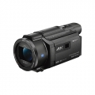
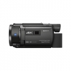
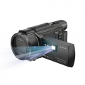
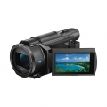
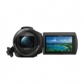
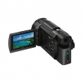

器材库 > 高清摄像机 > FDR-AXP55

规格总览
发布日期
2016-02-16
厂家推荐价格
8,580.00 （人民币）
HD
4K
视频信号
UHDTV, HDTV, PAL color, CCIR标准
影像传感器
影像传感器
Exmor R CMOS
影像传感器尺寸
1/2.5英寸
总像素
约859万
有效像素（动态模式）
约829万
有效像素（静态模式）
（16:9）约829万像素 / （4:3）约662万
镜头和对焦
镜头
蔡司镜头（ Vario-Sonnar T*镜头）
光圈
f/2.0-3.8
焦距
4.4-88mm
等效35mm焦距
动态模式26.8-536.0mm(16:9)静态模式26.8-536.0mm(16:9)32.8-656.0(4:3)mm
光学变焦
20倍
数码变焦
250倍
滤镜口径
55mm
最近对焦距离
约1cm-80cm
对焦系统
对比对焦对焦模式：自动/手动（触摸屏）快速智能对焦：是
拍摄性能
录制格式-视频
XAVC S格式:MPEG4-AVC/H.264 AVCHD 格式 ver.2.0 兼容:MPEG4-AVC/H.264 MP4: MPEG-4 AVC/H.264
录制格式-音频
MPEG-4 线性PCM 2ch(48kHz/16bit) 杜比数字 5.1声道 杜比数字 2声道立体声 MPEG-4 AAC-LC 2声道
录制格式-静态图像
JPEG（DCF Ver.2.0 兼容, Exif Ver.2.3 兼容, MPF基线兼容）
视频尺寸
XAVC S 4K : 3840x2160/25p, 24p XAVC S HD : 1920x1080/50p, 25p, 24p AVCHD : 1920x1080/50p(PS),25p(FX,FH),24p(FX,FH),50i(FX,FH), 1440x1080/50i(HQ,LP) MP4: 1280x720 25p
静态图像尺寸
动态模式M: 830万像素 16:9(3840x2160) S: 210万像素 16:9 (1920x1080)静态模式L: 1660万像素16:9 (5440x3056),1250万 4:3 (4080x3056) M: 830万像素 16:9(3840x2160),620万像素 4:3 (2880x2160) S: 210万像素 16:9 (1920x1080),30万像素 4:3 (640x480)
最低照度
4K标准模式:9 lux(1/50快门速度) HD标准模式:5 lux(1/50快门速度) 4K低照度模式:1.8 lux(1/25 快门速度) 4K低照度模式:1.2 lux(1/25 快门速度) 夜摄模式:0 lux(1/50快门速度)
场景模式
自动/夜景/日落日出/烟火/风景/人像/聚光灯/海滩/雪景
内置麦克风
是
内置喇叭
是
白平衡
自动/一键式/户外/室内
快门速度
自动快门速度：1/6-1/10000快门速度（标准）：1/50-1/10000快门速度(手动光圈)：1/25-1/10000快门速度(手动快门)：1/6-1/10000
防抖系统
5轴防抖（平稳光学防抖智能增强模式）
时间码记录
是
其它功能
双摄录制投影功能逆光补偿降噪遥控控制拍摄者声音消除音频等级显示手动环人脸检测笑脸快门WiFiNFC一键编辑（精彩场景设置）延时拍摄
液晶屏/取景器
取景器
电子取景器，视野率约100%
LCD尺寸
3.0英寸
LCD像素
约92万
LCD特性
触摸屏, 翻转屏
存储规格
内置存储容量
64GB
存储卡
MS/MS PRO记忆棒, SD/SDHC, SDXC
输入输出
数据接口
微型USB
视频/音频接口
HDMI 输出
配件端口
外接附件接口, 耳机, 外接电源插孔, 麦克风输入端子
电源
电源（电池/电源适配器）
可重复充电电池（V系列），6.8V/7.4V (电池)，8.4V (AC适配器)
耗电量
4K：4.9W
机身规格
颜色
黑色
尺寸
77×80.5×166mm
重量
仅机身约565g / 含标配电池约660g
其它
附件
可重复充电电池NP-FV70，USB连接线（微型），AC适配器，HDMI线（微型），说明书，电源线
工作温度
0~40℃
Simon19602017-08-06 19:404.31 分
操作性 4.50功能性 4.50美观性 4.50趣味性 4.00耐用性 4.00性价比 4.00解像力 4.50色彩还原 4.50
产品图 / 样片
FDR-AXP55

FDR-AXP55

FDR-AXP55

FDR-AXP55

FDR-AXP55

FDR-AXP55